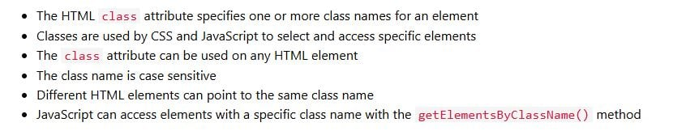
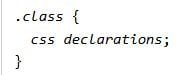
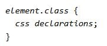

CSS Rule
A CSS rule has two main parts: a selector and one or more style declarations.

Style Properties
Properties Collected in Six Groups
- Fonts
- Colors and Backgrounds
- Text
- Boxes and Layouts
- Lists
- Tag Classifications
Classes
What Are Classes?
- A class is a user-defined selector.
- It is used to apply a style rule to specific HTML tags.
- It is a reusable style definition that applies the same formatting rules to multiple HTML elements.
- It allows control of individual HTML element formatting.
- Classes are defined using dots (e.g.,
.classname).
Two Methods of Writing a Class
- By indicating the HTML element followed by a dot and the class name (e.g.,
p.classname).
- By writing the class name preceded by a dot only (e.g.,
.classname).
Class Selectors
Class Selector (.classname): Reusable across different elements.

Element + Class Selector (p.classname): Provides precise control over styling for one type of element.

Reflection
In this lesson, I learned how to use classes, their syntax, and their purpose. Classes make coding easier, more organized, and time-efficient by allowing reusable and consistent styling across different elements.